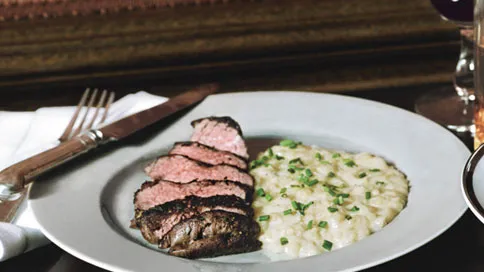
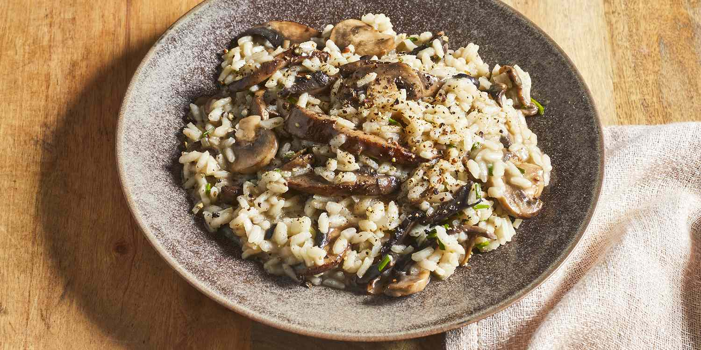

GRILLED SALMON WITH LEMON-DILL SAUCE
A succulent fillet of grilled salmon seasoned with herbs, served with a tangy and refreshing lemon-dill sauce. It's accompanied by a side of roasted vegetables and your choice of rice or mashed potatoes.
BEEF TENDERLOIN MEDALLIONS
Tender cuts of beef tenderloin, seared to perfection and served with a rich red wine reduction sauce. It's accompanied by garlic mashed potatoes and a side of sautéed seasonal vegetables.
MUSHROOM RISOTTO
A creamy and flavorful risotto dish cooked with Arborio rice, mixed mushrooms, white wine, parmesan cheese, and a hint of truffle oil. It's a delicious vegetarian option and can be garnished with fresh herbs for an extra touch.